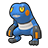

Access to:
West: Icirrus City
East: Tubeline Bridge
Accessible on the route: Moor of Icirrus
Utility:
Surf is required in the winter (April, August, and December) to access a Full Restore. Wild Pokémon can also be encountered here with Surf.
During a swarm, the player has a 40% chance of encountering the swarming Pokémon, and a 60% chance that their encounter is taken from the normal encounter table.
This swarm can only be encountered outside of winter (April, August, and December).
| Pokémon | Level | |
|---|---|---|
|
 |
Croagunk | lv. 15-55 |
During a swarm, the player has a 40% chance of encountering the swarming Pokémon, and a 60% chance that their encounter is taken from the normal encounter table.
This swarm can only be encountered outside of winter (April, August, and December).
| Pokémon | Level | |
|---|---|---|
| Quagsire | lv. 40-55 | |
| Item | Location | Notes |
|---|---|---|
| Max Elixir | Near Icirrus City | Hidden. This can only be accessed outside of winter (April, August, and December). |
| Poison Barb | North of Pokémon Ranger Lewis | |
| TM36 Sludge Bomb | Northeast of Pokémon Ranger Lewis | |
| Full Heal | East of Parasol Lady Melita | |
| Full Restore | Northwest of Pokémon Ranger Annie | Hidden. In the winter (April, August, and December), requires Surf. |
| Full Restore | Obtained from Bianca | Only after defeating her. |
| Ultra Ball | East of Pokémon Ranger Annie | |
| TM42 Facade | Obtained from the Parasol Lady in the middle of the route | |
| Damp Rock | Obtained from the Parasol Lady near Tubeline Bridge | Can be obtained once a day, in the morning. |
| Heat Rock | Obtained from the Parasol Lady near Tubeline Bridge | Can be obtained once a day, in the daytime. |
| Smooth Rock | Obtained from the Parasol Lady near Tubeline Bridge | Can be obtained once a day, in the evening. |
| Icy Rock | Obtained from the Parasol Lady near Tubeline Bridge | Can be obtained once a day, at night. |
| Trainer | Party | Notes |
|---|---|---|
| Pokémon Ranger Lewis | Cubchoo lv.34 Palpitoad lv.34 Maractus lv.34 |
He will give the player a Pecha Berry after the battle. |
| Parasol Lady Melita | Frillish lv.34 Ducklett lv.34 |
|
| Pokémon Ranger Annie | Cinccino lv.36 | She will give the player a Pecha Berry after the battle. |
| Fisherman Bruce | Basculin (Red) lv.34 Basculin (Blue) lv.34 |
|
| Parasol lady Lumi | Alomomola lv.35 | |
| Bianca | Stoutland lv.38 Elemental lv.38 Musharna lv.38 Starter (3rd stage) lv.40 |
Only after obtaining the Light Stone (Black) or Dark Stone (White). She will give the player an Full Restore after the battle. Elemental is one of Simisage, Simisear, or Simipour; whichever has the type strong against the player's starter. Her starter is the one whose type is weak against the player's starter. |